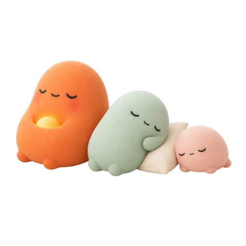
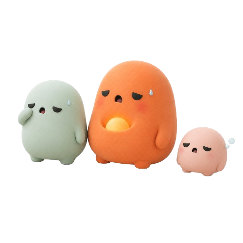

Where the alphabet
becomes a sentence.
Six product flows assembled from the system: onboarding for the three families (embarazo · recién nacido · 18 meses); the Hoy screen for each phase; calendario with Haizea grid and OMS curve; the vacuna route from list to libro; quick log from Watch glance to timeline entry; and the Sueño module as a libro of lessons. Plus empty states, error states, and the three transitions that carry most of the product (sheet, modal, FAB).
Three families, four screens each, no welcome animation.
1. Embarazo · 32w
¿Dónde estáis ahora mismo?
Esto cambia todo lo que verás. Puedes editarlo en cualquier momento.
¿Cuándo es la fecha estimada?
Si todavía no la sabes, podemos calcularla.
¿Quién más vive en casa?
Pueden compartir el log y los avisos. Hasta 4 personas.
Hola, María.
salud
diario
2. Recién nacido · 18 días
¿Cuándo nació?
Para calcular su edad real y corregida.
¿Cómo se llama?
Solo nosotros lo veremos.
Solo lo usamos para curvas WHO niñas/niños. Puedes cambiarlo siempre.
Hola, María.
alimentación
cólicos
sueño
diario
The same shell, three different days. The avatar carries the phase.
Semana 32.
salud
diario
Día 18.
alimentación
cólicos
sueño
diario
El día empieza despacio.
vacunas
desarrollo
alimentación
sueño
salud
diario
The long view of the same cards Hoy already knows.
Hitos de este mes
- Marcha autónoma
- 10–50 palabras
- Garabateo · trazos sin forma
- Bebe de la taza solo
- Imita peinarse, llamar por teléfono
Libro de vacunas
Calendario AEP 2025 + CAM. Privadas con orientación AEP.
Curvas de crecimiento
Vuestros recuerdos
Marcha autónoma
- Suelta los muebles y da 5+ pasos sin caer.
- Pies hacia afuera, trasero salido para equilibrio.
- Brazos arriba o abiertos como balance.
- Caídas frecuentes son normales · piso suave ayuda.
¿Qué guía clínica seguimos?
Las edades esperadas para hablar, andar o cribar varían entre guías. Elige la que use tu pediatra · siempre puedes cambiarla.
The four screens between "next dose" and "vacuna registrada".
Vacuna route · Triple vírica
Lola · 18m
Libro de vacunas
Puestas
Futuras
AEP 2025 + CAM · privadas con orientación.
Triple vírica
Sarampión · rubéola · paperas. 1ª dosis.
Registrada.
Triple vírica · 1ª dosis. Te acompañamos las próximas 24 h.
Vigilancia · 24 h
Watch glance → app sheet → timeline entry. < 5 segundos.
Watch glance + tile sheet
Lola · 18m
Hoy
One module, treated as a book — chapters, cards, marginalia.
Sueño · index + 4 lessons
Sueño
Cuando duerme bien, todos dormimos mejor.
Capítulos
Editores: Dra. M. Ruiz · D. Carrasco. Revisado AEP.
Regresión 4m, 8m, 18m
No es un retroceso. Su cerebro se reorganiza.
Lecturas

5 minRegresión de los 4 meses, sin alarma
Los ciclos REM cortos llegan. Por eso se despierta más.

3 minLo que sí ayuda · lo que no
Las 5 estrategias con evidencia, las 3 sin ella.
Regresión de los 4 meses, sin alarma.
No es un retroceso. Es la primera reorganización grande del sueño infantil. Los ciclos pasan de 50 minutos a 90, y aparece el sueño REM corto.
Lo notas porque empieza a despertarse al final de cada ciclo — y le cuesta volver a dormirse sin tu ayuda. Dura entre 2 y 4 semanas, y pasa.
Lo que ayuda: rutina previa estable, oscuridad firme, ruido blanco. Lo que no: cambios bruscos, dejar llorar.
What happens when there's nothing yet, when something fails, and how things move.
1. Empty states · 4 ejemplos
Tu día empieza en blanco.
Anota cuando quieras — no antes.
Peso · Lola
Bonus: si tienes una báscula BL Bluetooth conectada, la traemos sola.
Aún no hablamos.
Sugerencias
2. Error states · 3 ejemplos
El día empieza despacio.
3 entradas pendientes.
Las subimos en cuanto vuelvas a tener red.
No conseguimos leer.
Mucho ruido de fondo. Prueba más cerca o vuelve más tarde.
Mientras tanto
3. Transiciones clave · 3 ejemplos
a · Quick log sheet · 380ms ease-out
FAB tap → sheet sube desde 60% off-screen al 0%. El scrim entra en 0–32% opacity en paralelo. Cero overshoot.
b · Modal de confirmación · 250ms scale + fade
El modal entra en scale 0.94→1.0 + opacity 0→1. Salida es opacity 1→0 en 200ms. Scrim sigue al modal en sincronía.
c · FAB · long press → fan-out · 300ms
Tap normal abre Quick log sheet. Long press 120ms inicia rotación 45° + fan-out de 3 opciones más rápidas (la última usada). Soltar fuera cancela.